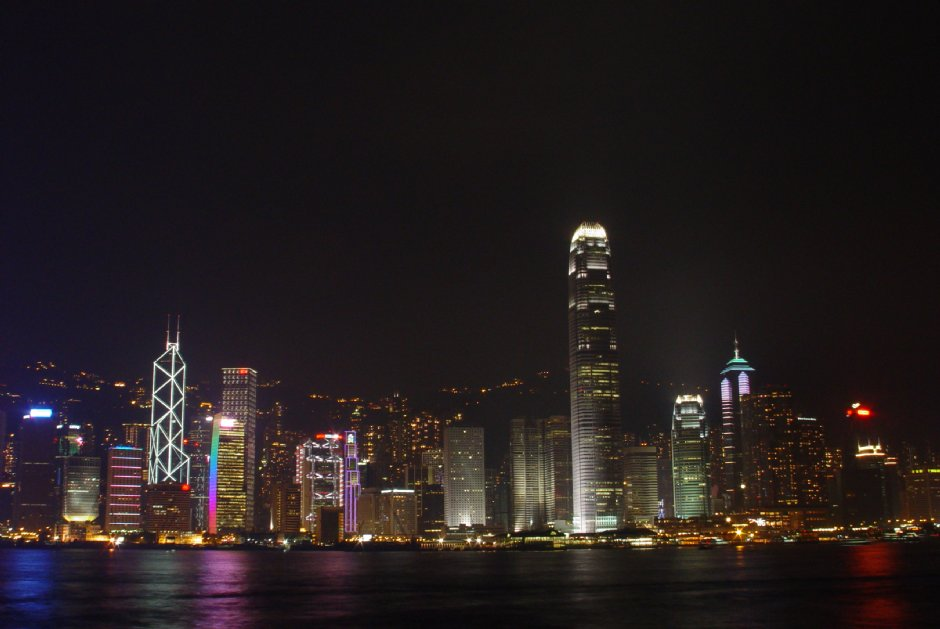
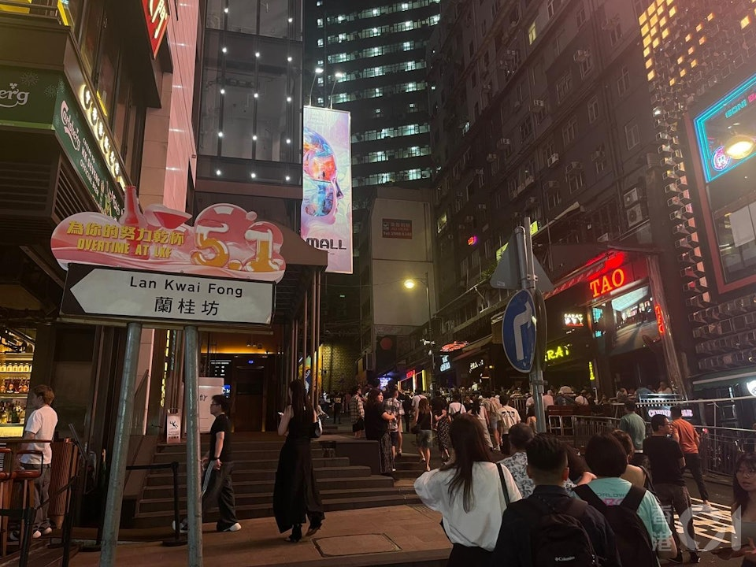

香港
香港是一個獨特的城市，融合了東西文化，擁有豐富的歷史背景和多樣的旅遊景點。
以下是一些主要的旅遊景點以及它們的歷史和文化詳細介紹：
旅遊景點

維多利亞港
歷史:
維多利亞港是香港最具代表性的地標之一，自19世紀中期以來便是香港的商業和貿易重心。1842年英國獲得對香港的主權後，維多利亞港迅速成為亞洲重要的貿易港口，促進了香港的經濟發展。
文化：
作為香港的象徵，維多利亞港不僅是商業活動的中心，也是文化交流的重要場所。港口定期舉辦各類活動，如燈光秀和煙花表演，吸引了大量遊客和市民前來觀賞。
景點：
1. 天星小輪 ：
是穿梭於港灣兩岸的小船，提供經典的觀光體驗，並能欣賞到香港島和九龍的優美景色。
2. 星光大道 ：
聖約翰港長廊為遊客提供了近距離欣賞維多利亞港的機會，還設有多位香港電影明星的紀念碑。
3. 幻彩詠香江 ：
這是一場每晚定時舉行的燈光秀，結合音樂和燈光，展示香港的繁華夜景。

中環的蘭桂坊
歷史:
蘭桂坊是香港著名的夜生活區，早在19世紀末就開始發展，吸引了許多外國商人。
文化：
這裡有各式酒吧、餐廳，是社交和休閒的熱點。
景點：
1. 酒吧和餐廳 ：
提供多元化的飲食選擇，從本地小吃到高檔餐廳，各式風味應有盡有。
2. 街頭藝術和音樂表演 ：
許多街道上都有藝術作品和街頭表演，增添了區域的活力和趣味。
3. 定期慶典 ：
如音樂節和文化活動以及年度的萬聖節慶祝活動，吸引了許多人參加。

太平山頂
歷史:
太平山頂是香港島的最高點，自19世紀中期以來，便成為英國殖民者的度假勝地。1868年，太平山頂纜車啟用，使得市民和遊客更容易抵達這一景點，並欣賞壯麗的城市全景。在當時，這裡吸引了許多富裕的家庭和觀光客，逐漸發展成為香港的著名旅遊地點。
文化：
太平山頂不僅是觀光的場所，更是香港文化的一部分。隨著城市的発展，這裡成為人們休閒和社交的中心。山頂的廣場經常舉辦各類活動，並是當地和遊客聚會的理想地點。
景點：
1. 山頂纜車 ：
提供通往山頂的獨特交通體驗，沿途可欣賞到香港的城市風光。
2. 觀景台 ：
在這裡可以俯瞰到壯觀的維多利亞港、香港島和九龍的景色，夜晚尤其迷人。
3. 山頂廣場和商場 ：
設有多家餐廳、咖啡館和商店，也是品味當地美食的好去處。